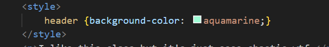

CSS - Cascading Style Sheets
Answers many questions, but mainly handles appearances.
CSS basics : link to CSS Basics
Internal CSS
 There's a paired style tag for including CSS into html docs, but this is the least common way of doing CSS. This body has the tag and between them - body {background-color: aquamarine} that makes this terrible page. Styles that element for the whole page; of course, there is only one header for the page, but if there were many, all would be aquamarine.
If you select an element and hit Ctrl + D, you get another cursor! And you can have more than just 2! This is actually pretty amazing
Inline CSS
Inline CSS is added directly to the HTML element. It is not reccomended to use inline CSS for styling the whole pge - it's a lot of work, styling each and every element. In case of conflicting styling, inline styling will win out
This text is red because it has inline style, within the opening p tag
The common approach

The normal way of doing CSS is to do it in a new file and include it in the webpage. Make a Styles folder (not obligatory but considered good... style). And then in the file write instructions how to format various objects. You can even use multiple seectors, just separate them with a comma. But in the webpage, you have to link the style sheet in a single tag link (see head for his page).
Both inline and internal CSS will overwrite this CSS. The last rule wins!
This is also how you can change the appeare for strong or emphasized elements.
Don't g overboard with using underline for text, because that makes them look like hyperlinks, especially if they are blue or purple (like a link that has already been clicked lmao)
You can assign random class to different object and then use CSS to style everything with that class. In that case, use the class name as the selector, and add a little dot before it. Likewise, if you have element with the id attribute, you can style that, too, but use a hash.It didn't work for me in class, so, if you want to use it, maybe google or smth, I don't know.
And there's also an !important rule, that will override any other rule, as long as that is not important, too.